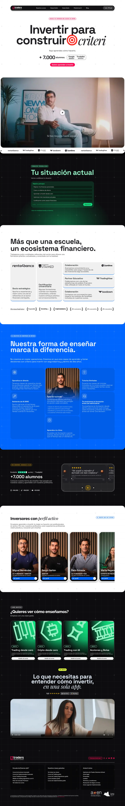
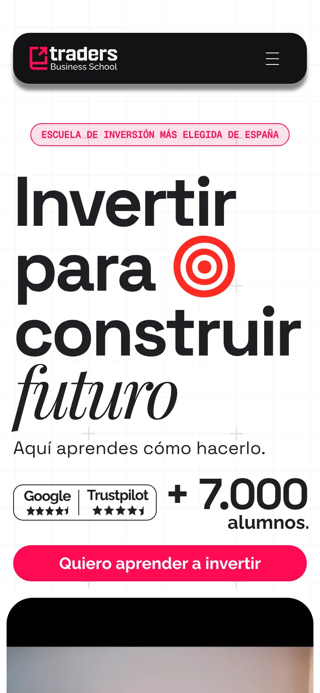
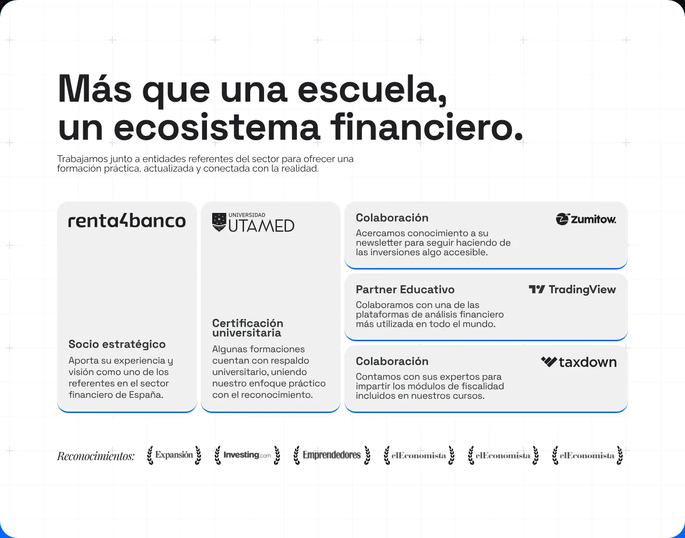
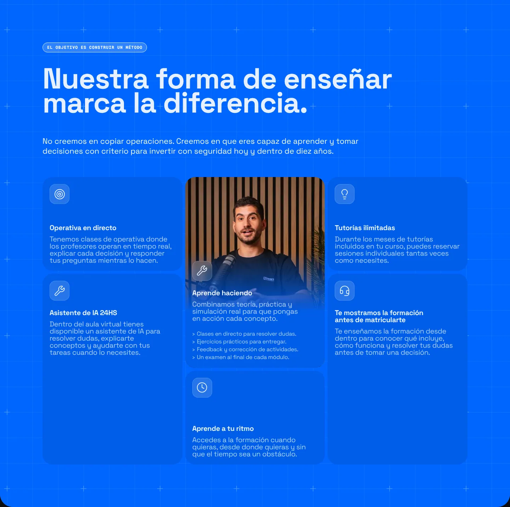
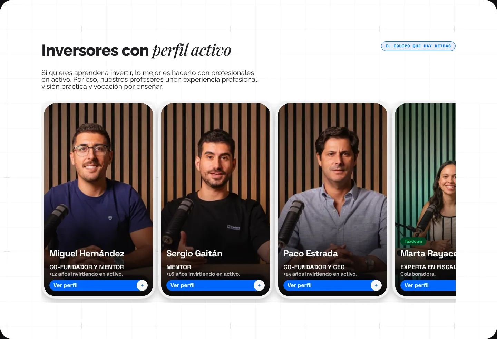
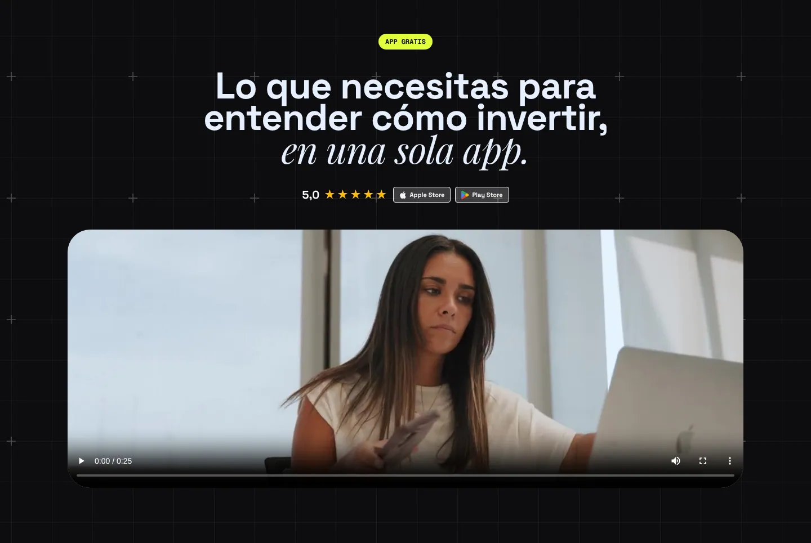

Traders Business School
De catálogo de cursos a ecosistema financiero: invertir para construir criterio.
Entrar en el casoRebranding · Traders Business School
construir criterio
De un catálogo de cursos a un ecosistema financiero: una marca que se reconozca sin depender de una sola cara.
02 · El salto
Un camino, no un curso suelto.
El manual de visión interna lo resume: TBS deja de vender productos aislados y acompaña a cada persona desde «no sé qué hacer con mi dinero» hasta «soy un inversor experto».
Antes
- Cursos separados
- Embudos aislados
- Un mensaje distinto por producto
- La marca era la cara de Miguel
Ahora
- Un ecosistema progresivo
- Un camino de aprendizaje con logros visibles
- Una sola propuesta de valor
- Guía, comunidad y método
- Empoderamiento financieroDecidir con confianza.
- Mejor juntosLa comunidad hace el viaje más sólido.
- Aprendizaje prácticoLo que aprendes, lo aplicas desde el primer día.
- 2019
- nace en Sevilla
- 2024
- entra Renta 4 Banco en el proyecto
- +77 %
- de crecimiento en alumnos e ingresos en 2025
- Dic. 2023
- dirijo el área de diseño
03 · Diagnóstico
Una marca escueta, sin memoria.
- 01
Sin reconocimiento
Todo el peso caía en el nombre y la imagen de Miguel. Poner o no el logo en un anuncio no cambiaba nada.
- 02
Sin coherencia
Anuncios, web y redes se habían hecho en momentos distintos, por personas distintas, sin un ecosistema común.
- 03
Sin impacto
¿De qué color es la mochila de Glovo? Ninguna pieza podía responder a una pregunta así.
El logotipo anterior
- Tipografía genérica y sin isotipo que reforzara la identidad.
- «Business School» se volvía ilegible en tamaños pequeños.
- Un rojo intenso que dificultaba la lectura, en el logo y en su uso gráfico.
04 · Referentes
Qué hacen bien otros.
Antes de diseñar, una base de conocimiento: marcas que trabajan muy bien su identidad, dentro y fuera de la formación.
- Fuera del sector
Vicio
El envoltorio del caramelo crea la memoria cuando el producto es indistinguible.
- Fuera del sector
Nude Project
Venden la marca, no el producto: cultura, pódcast y una estética reconocible.
- Fuera del sector
Wallapop
Una idea, la segunda vida, impregna toda la comunicación.
- Formación
Barcelona Finance School
Sobria y confiable; correcta, pero encorsetada.
- Formación
Nuclio
Identidad mejorable, pero vídeos que van al grano con personas reales.
05 · Sistema de marca
Tres niveles, de dentro afuera.
Si la marca no tiene claro quién es, su comunicación será inconsistente. Por eso el sistema empieza por el núcleo y termina en cada pieza que llega al público.
- 03 · AplicacionesWeb, app, anuncios, redes, aula virtual, webinars
- 02 · ElementosLogotipo, color, tipografía, tono, iconos
- 01 · NúcleoPropósito, valores, personalidad
06 · Personalidad
Somos humanos.
Inconformistas
Cuestionar lo establecido en la educación financiera.
Independientes
La autosuficiencia financiera como herramienta liberadora.
Auténticos
Un tono directo, cercano y sin eufemismos.
El Sabio, con matices de Héroe
Una guía que transmite conocimiento práctico y veraz, y que motiva a cada alumno a ser protagonista de su propio viaje. «Conocimiento aplicado es poder.»
- Para nuevos«Empieza a entender tu dinero sin miedo ni tecnicismos.»
- Para intermedios«Da el salto a invertir con seguridad y práctica real.»
- Para avanzados«Opera como un experto con acompañamiento constante.»
07 · Identidad
Una diana: apuntar con criterio.
El isotipo acompaña al logotipo y lo hace responsive. Hace referencia a la mejora y al progreso, desde cero y sin límite: el objetivo que se fija cada alumno.
Aa Aa
Space Grotesk para titulares, texto y cifras: técnica sin ser fría.
Playfair Display en itálica para la palabra que importa.
+7.000 · 4,8 ★ · 24 h
Toca un color para copiar su código.
08 · La nueva web
La marca, en acción.
Fondo de cruces, una palabra en itálica en cada titular y bloques de color por intención: blanco para entender, azul para el método, negro y verde para pasar a la acción.






Estamos construyendo algo más grande que una escuela.
- Cliente
- Traders Business School
- Sector
- Formación financiera
- Papel
- Estrategia de marca, referentes, sistema de marca, manual de visión interna, identidad visual y web
- Caso
- Jose Antonio · Monochrome
¿Quieres un proyecto así para tu marca?
Cuéntame tu idea en 2 minutos y te preparo una propuesta a medida.